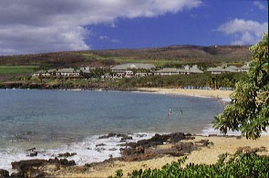

Pool & lodge at Manele Bay Hotel, Lanai.
 The lush 'n lovely beach at Manele Bay Hotel, on Lanai.
One of many quiet & comfortable sitting rooms in the Lodge at Koele.
Reflection pond at The Lodge at Koele, Lanai Island.
Aerial view of The Lodge at Koele, one of America's finest luxury hotels, on Lanai isle.
© Copyright U.S. Dive Travel Network.
HAWAIIAN ISLANDS: LANAI
After more than 40 scuba diving trips to various Hawaiian Islands since 1990 -- to explore new dive sites, revisit the old classics & establish new wholesale tropical vacation packages -- the management of U.S. Dive Travel feels confident in saying that we are America's foremost specialists in resort-based Hawaii diving. We have visited all seven of the inhabited Neighbor Islands of Hawaii -- including mysterious Niihau -- & most of these islands multiple times. Our mission in Hawaii is always to do new shore dives & boat dives each trip, & to examine countless hotels, charter vessels & dive operations for safety & service quality. We try to better serve our dive travel clients with information derived from hands-on & fins-on experience.
Based on our working dive trips to Hawaii, we believe The Manele Bay Hotel & its sister property, The Lodge at Koele, both situated on the secluded island of Lanai, are the most beautiful & luxuriously appointed hotels anywhere in Hawaii. These secluded Hawaiian resorts are so impeccably maintained, with service standards & amenities that equal the finest European & Pacific Rim luxury hotels, that even exuberant words fail to give them fair measure. Photos will help a little; but you have to see these hotels yourself to understand why even veteran tropical travelers who worship the Jaded Guru -- Bendar Dundat -- yes the ones who are wearily sure they've seen it all, would be gratified by such inimitable excellence.
The first good news is this: it's easy to get to Lanai. It is smack dab in the middle of the Hawaiian Islands. The island of Lanai is about 10 miles west of Maui; & there are scores of flights every week from Honolulu & the Neighbor Islands. The inter-island dash flights from Honolulu, on Aloha Island Air & Hawaiian Air Jet Service take less than half an hour to Lanai; & the views are vividly inspiring.
Our Lanai diving & snorkeling packages are not for everybody. Lanai is no island for vacation bargain hunters, nor for party-hearty dive chums seeking Cozumel-like specials, nor for Waikiki-style diving "cattle boats." The Lanai level of service & comfort was designed only for those couples & singles who insist upon, & are used to experiencing, the zenith of perfection on their getaways. Not one "t" is left uncrossed on Lanai island. This quiet little plantation isle, once a center for Dole Company pineapple production, has evolved into one of the world's top resort destinations, well on a par with Fiji's Vatulele & Australia's Lizard Island. In short, after visiting some two dozen countries in 25 years, U. S. Dive Travel's directors can affirm, with feeling, that Lanai diving & Lanai lodging together are a powerful duo, for a Hawaii diving vacation that has few peers.
Microsoft chairman Bill Gates & his entourage visited Lanai's resorts for a week, & enjoyed the most gala wedding party Hawaii has ever seen -- back in the summer of 1994. We arrived on Lanai island just a short while after the Bill Gates group departed, while the local buzz was hot. People are still talking, a little wide-eyed, about that Bill Gates wedding party -- on both sides of the Pacific. And with very good reason.
The Manele Bay Hotel, graced by meticulous flower gardens, pools, waterfalls, & lush green lawns, was designed with a uniquely gracious meld of traditional Hawaiian Kama'aina & Mediterranean-style architecture. Manele Bay Hotel sits high atop a promontory overlooking the lovely white-sand crescent of Hulopo'e Beach. Both outside & inside, Manele Bay Hotel seems like the embodiment of a dream.
The inside decor of Manele Bay Hotel borrows from Asian & Mediterranean motifs, with huge salons & foyers that seem palatial. Cool breezes constantly filter through most of the great halls & public rooms in Manele, carrying the fresh redolence of flowers & plants in the outside gardens.
One great advantage for divers in staying at The Manele Bay Hotel is that Trilogy's diving vessels can pick you up right at the beach & whisk you out to some of the finest reef diving in the Hawaiian chain, only a few miles away, along the southwestern coast of Lanai. Here you'll be thrilled by classic Lanai diving sanctuaries such as the First & Second Cathedrals, Monolith, the Catacombs, Knob Hill & Grand Canyon. The abundant & colorful marine life, & the dramatic underwater rock grottoes off southern Lanai, are second among Hawaii's best diving only to the virgin coral wilderness of Niihau, "The Forbidden Island" off Kauai, & the wild South Shore of Molokai. The water clarity, & the freshness of Lanai's reef habitat, are enough to rouse any veteran diver's soul. You'll see awesome rock spires & archways, caves & cubbyholes with their healthy denizens: moray eels, mantas, whitetips, spotted pufferfish, surgeonfish & wonderful turtles. Just thinking about Lanai diving makes our staff want to mutiny & take the next plane to Lanai to escape Seattle's drizzle!
The Manele Bay Hotel offers several world-class restaurants & lounges, along with a fitness center, massage service, pool & a golf course designed by Jack Nicklaus -- "The Challenge at Manele -- that would lure most dedicated golfers into green nirvana. If you're looking for apres-scuba activities (of course wait sufficient time after your dives before you ascend to the highlands!) here's what else you can enjoy on Lanai:
Meanwhile, linked all day long to Manele Bay Hotel by frequent shuttles, is the highland Lodge at Koele, our vote for the finest hotel we have ever visited anywhere in the world. Designed like an ultra-elegant English country manor, or hunting lodge, the Lodge at Koele sets a standard of luxury & serenity that few lodges ever aspire to match. Nestled in a dense Norfolk pine forest, surrounded by vast green acres of manicured lawns as lush as U.S. Open fairways, festooned by countless exotic flower gardens, Koele Lodge has a Great Hall with vaulted big-beam ceiling, a huge rock fireplace & antique artifacts gathered from all over the world, conferring tasteful vitality upon every table, wall & nook you see.
The bedrooms at Koele Lodge offer ample four-poster beds with quilted pillows & local Hawaiian paintings on the walls. The restaurant meals in the Lodge at Koele are a gustatory adventure. Every day has a new treat to savor! Adding even more charm to this vast estate are a swimming pool, hidden little gazebos where you can slip away for a peaceful tete-a-tete, intriguing sculptures, & wonderful English Conservatory that's filled with Lanai orchids; plus a well-groomed putting course, lawn bowling & croquet areas.
For golf mavens, there's the "Experience at Koele" golf course, designed by champion Greg Norman, with views to four Neighbor Islands from many fairways & a trademark hole that plummets 200 feet from the tee to a slyly beckoning green in the valley below. There is Warhol & there is Cezanne. There is country club golf & there is golf at Manele Bay.
TRILOGY DIVING TRIPS: On board beautiful custom sailing catamarans, these dive trips all include a Continental breakfast (with Trilogy's famous home-baked cinnamon rolls & fresh fruit, soda & juices) + a generous deli lunch + first-class scuba gear provided + vessel transport to dive sites & certified divemaster guides to lead you safely down & back.
FOR MORE INFORMATION or RESERVATIONS: Phone U.S. DIVE TRAVEL's Main Office in St. Paul, MN: 952-953-4124.
Fax Line: 952-431-5023.
E-mail Address: divetrip@bitstream.net
Internet Address: http://www.usdivetravel.com
IMPORTANT NOTE: All Lanai diving package prices are subject to possible change. Unless specifically noted, these are prices for only the land-based portion of your Lanai dive vacation, in most cases reflecting double-occupancy rooms. International & domestic overseas airfares, & commuter ("island-hopper") airfares are extra. Nominal U.S. Dive Travel service fees are also extra. All U.S. Dive Travel clients who prefer to pay with a credit card will be charged the full regular retail price, which is five percent (5%) higher than these above-listed cash discount rates. Before we forget, if you have a Lanai honeymoon in mind; well we have honeymoon specials, honeymoon packages, honeymoon getaways galore. We've got Manele Hotel packages, Koele Lodge packages, snorkeling vacations, dive vacations for Happy Bubblers, you simply dream of it. Then Lanai will make those wishes into reality. For a price. But the price is right, our many satisfied clients will aver. Lanai luxury hotels are the crown jewels of Hawaii vacation properties. Lanai hotels have no peers in the Hawaiian Islands, we feel, though some may beg to differ. Best of luck with all your dive travel plans! Hope your Lanai dive vacation is a great adventure! Blessings.
John & Susan Hessburg Managing Directors U.S. Dive Travel.